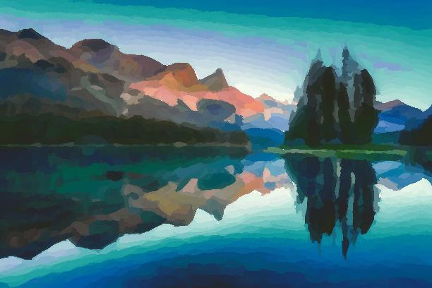

Monet-ification
Names: Rohan Aanegola, Swetha Rajkumar, Inas Zulaikha Anwar, Mihir Rao
Link to webpage: https://swetha2022.github.io/monetification-website/184projectmilestone/
Monet-ification Overview
In our project, we aim to convert real-life photographs into impressionist art similar to Claude Monet's work. We will work with core graphics pipeline techniques, such as rasterization, image sampling, and texture mapping to break down photographs into their pixel components and simulate impressionistic art and color blending when rendering the scene.
Current Accomplishments
Preliminary Results
Below are some images depicting different images and our Monetified renders.
|
|
|

|

|
|
|
|
Progress Reflection and Updated Work Plan
Resources
- Pointillism: https://github.com/matteo-ronchetti/Pointillism/tree/master
- Sketching with OpenCV: https://medium.com/data-science/painting-and-sketching-with-opencv-in-python-4293026d78b
- Stroke based rendering: https://www.cs.ucdavis.edu/~ma/SIGGRAPH02/course23/notes/S02c23_3.pdf
- Characteristics of impressionism for reference: https://arthistorywithalder.com/impressionism-art-characteristics/
- PBRT to refer to in times of crisis: https://www.pbrt.org/
- OpenCV: https://opencv.org/
- Monet Palette: https://www.overstockart.com/blog/analyzing-claude-monet-oil-paintings-colors-subjects-and-misconceptions/?srsltid=AfmBOopZ6UeVva4BdzFxD8vAmUKjfVRveC5rqbAPYdhM7sCOm8r6zvDF
- Color Register: https://color-register.org/color/
- HTML Color Codes: https://htmlcolorcodes.com/colors/